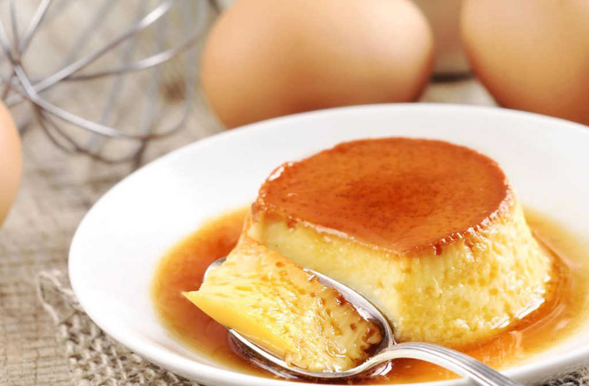

Flan Casero
Volver al inicio

Description
A flan, in British cuisine, is an egg-based dish with an open,
rimmed pastry or sponge base containing a sweet or savoury filling;
examples are bacon and egg flan or custard tart.
Ingredientes
- Azucar: 550 gramos (300 gramos caramelo y 250 gramos para el resto)
- Leche: 750 cm3
- Huevos: 7
- Esencia de vainilla: 2 cucharadas (opcional)
- Rayadura de limon: 1 limon (opcional)
Steps
Caramelo
- Revolver. Se ponen de a poco los 300 gramos de Azucar
en un recipiente con la hornalla del horno al minimo mientras se revuelve con
una cuchara grande para evitar que el caramelo se queme. No agregar agua.
Cuidado de no quemarse.
- Esparcir. Cuando este totalmente liquido, retirar el
caramelo del fuego y con mucho cuidado llevar el caramelo a todos los lados
de la flanera, a medida que se enfrìe queda adherido a las paredes. Puede usarse
la cuchara para ayudarse.
Relleno
- Mezcla. En un bol colocar la leche con los huevos y 250 gramos
de azucar. Mezclar todo sin batir demasiado. Queda aun mejor con esencia de vainilla
y ralladura de cascara de limon.
- Baño Maria. . Volcar la preparacion en la flanera fria. Colocar
la flanera a baño maria adentro del horno (temperatura media) durante 1 hr 30 minutos.
- Enfriar. Con mucho cuidado se saca la flanera del horno, se deja
enfriar y luego a la heladera por un minimo de 3 hs sin desmoldar aun.
- Desmoldar. Despues de minimo 3 hs en la heladera se desmolda y da
vuelta en un plato grande